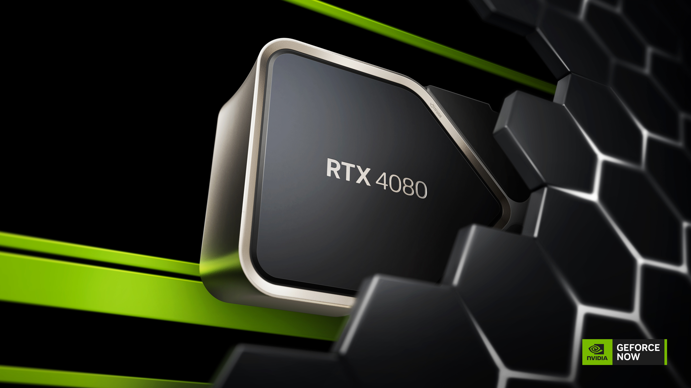

A Inteligência Artificial para todos...
As novidades da AI
Por Pedro Lucas
8 de Junho de 2024
A Inteligência Artificial tem sido muito explorada e apreciada nos últimos tempos, temos o chatGPT sempre do nosso lado, e cada vez mais softwares e equipamentos a utilizar esta tecnologia espetacular, porém à relativamente pouco tempo têm aparecido novas referências e novos conceitos, assim como medos e preocupações, sem esqueçar o preço que tem estado sempre a aumentar...
Bem, podemos começar pelo aparecimento do novo processador Snapdragon X Elite, o novo processador da Qualcomm para portáteis com foco na AI. Um processador que a Microsoft afirma ser 50% mais rápido que os chips M3 dos Macbook's Air da Apple! O processador conta com 12 Núcleos, cache de 42MB e com uma capacidade rercord de 45 TOPS (trilhões de operações de segundo), uma nova especicificação introduzida nos novos processadores e placas gráficas, introduzida devido à inclusão de tecnologia para lidar com esta nova tendência que é a inteligencia artifical.
Devido à introdução de NPU's nos processadores, esta começou a ser uma especicificação. Mas o que é isto de NPU's ou Unidade de Processamento Neural? NPU é um processador responsável por acelerar operações de AI, simples assim.
Antigamente, antes de aparecer este conceito, pelo menos para o público, eram utilizadas principalmente gpu's para este trabalho. E com a demanda da inteligencia Artificial, várias empresas adquiriam este tipo de hardware em quantidade. Sendo esta a provável causa para o crescimento da empresa NVIDIA, a principal referências de gpu's no mercado. O que levou à mudança do principal objetivo da empresa, que era a fabricação de placas gráficas, para a Inteligência Artificial. O que talvez devesse preocupar no futuro...
Ainda falando em processadores, foi também anunciado recentemente os processadores Ryzen 9000 para desktop e o Ryzen AI 300 para laptops pela parte da AMD.
Estes Ryzen AI 300 serão os mais interessantes pois são especializados em rodar inteligencia artificial, e são compatíveis com a nova tecnologia da Microsoft "Copilot+PC", com 50 TOPS (trilhões de operações de segundo) disponíveis a AMD diz serem os melhores processadores para esta nova tecnologia da Microsoft.
Novas tecnologias, novos nomes... Isto porque agora já não vai ser tão fácil identificar se o processador é melhor ou pior que o outro, só vendo as especicificações, isto acontece mais para a parte da Intel do que para a da AMD, mas vale a pena referir, mesmo que alguns dos novos processadores da Intel ainda estejam por vir.
Planos da Microsoft
A Microsoft, como já referi anteriormente, também está a lançar uma nova tecnologia para integrar AI no Windows. Porém nem tudo é um mar de rosas como sabemos. Juntamente com todas as novas e incriveis funcionalidades que a Microsoft planeia para o Windows com AI, como inclusão de Inteligência Artificial no Paint, tradução de idioma com AI em videochamadas, temos também funcionalidades que causam imensa polêmica.
Windows Recall
Esta nova feature do Windows com Copilot+PC, está causando imensa polêmica, o que faz sentido sendo no que consiste. Isto pois não é nada menos que uma funcionalidade que tira capturas de ecrã de 5 em 5 segundos que passam, estejas a ver documentos importantes ou simplesmente uma pesquisa na internet. Segundo a Microsoft estas capturas de ecrã que são tiradas ficam apenas armazenadas no próprio dispositivo e encriptadas. Como podem ver, um ótimo desastre em termos de segurança, e também de privacidade. Com esta funcionalidade apenas teria de pesquisar o que procura e ela dar-te-ia o resultado, com base na memória fotográfica que ganhou à medida que você utilizou o computador.
A minha opinião
Eu estou extramamente entusiamado em ver no que isto dará, principalmente em colocar as mão e fazer testes em algo com esta nova tecnologia chamada de NPU, ideal para projetos de Inteligência Artificial. Enquanto isso assisto à criação de novos rivais, como o caso da Qualcomm, da AMD e da Intel na parte dos processadores. Vejo mudanças na parte da eficiencia energética, resultando em maior autonomia de bateria nos laptops e integrando um ótimo desempenho. Novas tecnologias a aparecerem, juntamente com novas ideias e inovações, tanto em software como em hardware. Em relação ao Windows, acho em parte que ficará interessante, mas tentarei migrar definitivamente o mais rápido possível, para o Linux, e aconselho vivamente a fazer o mesmo. O Windows "está cada vez pior" em termos de segurança, e já não quer saber mais da privacidade do utilizador. Onde já se viu um sistema operativo que monitora repetidamente o que faz no computador, passwords, credienciais bancárias, documentos sensíveis, tudo à distância de um click, um verdadeiro jackpot para hacker's ou mesmo apenas para pessoas mal itencionadas. E outra, nada garante que a Microsoft não vai acabar por usar os nossos dados para... sabe-se lá... Eu não confio, e você também não deveria...